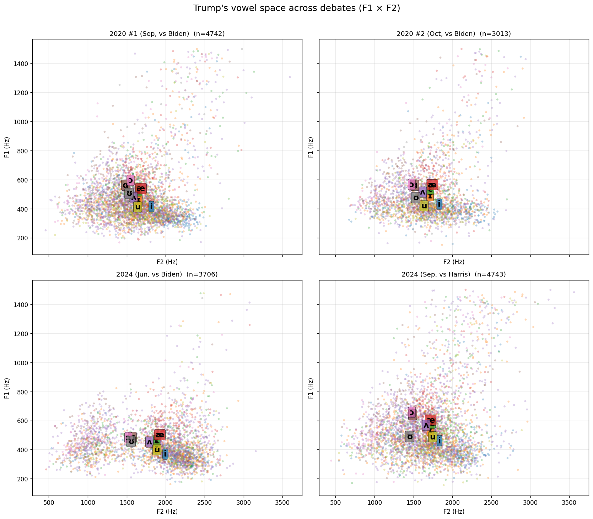
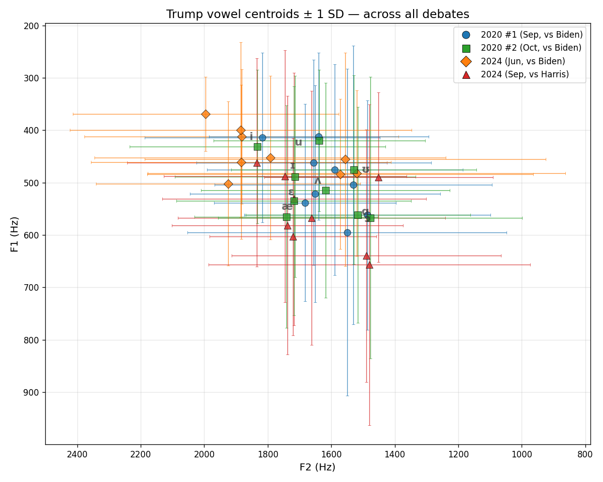
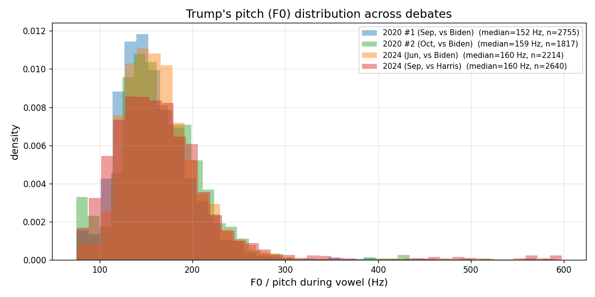
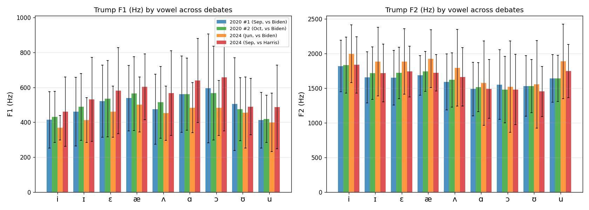
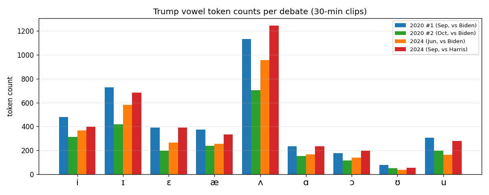

Acoustic analysis via TAPA (Whisper small.en + Silero VAD + Resemblyzer + Praat) · 30-min clips from each debate
2020 #1 Sep · vs Biden · 4742 tokens 2020 #2 Oct · vs Biden · 3013 tokens 2024 Jun · vs Biden · 3706 tokens 2024 Sep · vs Harris · 4743 tokens
F1 (openness) × F2 (backness) scatter with IPA centroid labels. The overall vowel triangle shape is consistent across all four debates — the acoustic signature of the same speaker.

All four debates overlaid. Circles = 2020 #1, squares = 2020 #2, diamonds = 2024 Biden, triangles = 2024 Harris. Error bars show ± 1 SD. The 2024 Harris debate (red triangles) shows noticeably higher F1 values across almost every vowel — the vowel space has shifted downward (more open articulation).

Median pitch rises from 152 Hz (2020 #1) to 160 Hz (2024 debates) — an 8 Hz increase over 4 years. The 2020 #1 distribution (blue) is the most peaked/concentrated; the 2024 Harris debate (red) has a broader, higher tail — more pitch variation and higher overall register.

Bar charts with error bars. F1: the 2024 Harris debate (red) is consistently the highest across all vowels — Trump's articulation was more open in that debate. F2: the 2024 Biden debate (orange) shows elevated F2 across the board — fronted vowel space. The two 2020 debates (blue, green) are more similar to each other than to either 2024 debate.

Consistent proportional distribution across debates — ʌ dominates (unstressed centrals), ʊ is rare. 2020 #1 and 2024 Harris had the most tokens (Trump talked the most).

| Debate | Median F0 | Mean F0 | Vowel tokens with pitch |
|---|---|---|---|
| 2020 #1 (Sep, vs Biden) | 152 Hz | 160 Hz | 2755 |
| 2020 #2 (Oct, vs Biden) | 159 Hz | 166 Hz | 1817 |
| 2024 (Jun, vs Biden) | 160 Hz | 166 Hz | 2214 |
| 2024 (Sep, vs Harris) | 160 Hz | 170 Hz | 2640 |
| Vowel | 2020 #1 | 2020 #2 | 2024 Biden | 2024 Harris | ||||
|---|---|---|---|---|---|---|---|---|
| F1 | F2 | F1 | F2 | F1 | F2 | F1 | F2 | |
| i | 414 | 1817 | 431 | 1832 | 369 | 1995 | 462 | 1834 |
| ɪ | 462 | 1655 | 488 | 1714 | 412 | 1883 | 531 | 1717 |
| ɛ | 522 | 1651 | 535 | 1718 | 461 | 1884 | 581 | 1738 |
| æ | 538 | 1683 | 565 | 1742 | 502 | 1925 | 603 | 1721 |
| ʌ | 476 | 1589 | 514 | 1618 | 452 | 1792 | 567 | 1662 |
| ɑ | 562 | 1486 | 561 | 1516 | 484 | 1572 | 640 | 1489 |
| ɔ | 595 | 1550 | 567 | 1477 | 482 | 1520 | 657 | 1480 |
| ʊ | 505 | 1531 | 475 | 1529 | 456 | 1556 | 490 | 1451 |
| u | 412 | 1640 | 419 | 1638 | 399 | 1885 | 488 | 1746 |
Generated by analyze_debates.py from TAPA pipeline outputs.